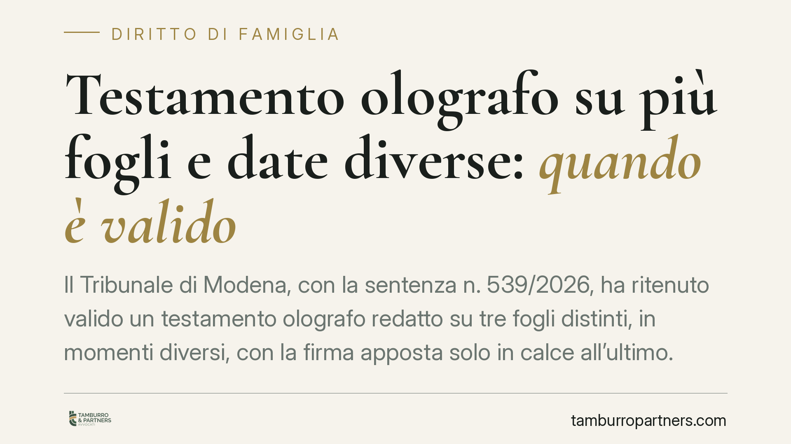

Testamento olografo su più fogli e date diverse: quando è valido
Il Tribunale di Modena, con la sentenza n. 539/2026, ha ritenuto valido un testamento olografo redatto su tre fogli distinti, in momenti diversi, con la firma apposta solo in calce all'ultimo. La decisione applica il principio del favor testamenti e chiarisce quali requisiti servono perché uno scritto frammentato mantenga efficacia. Un tema che tocca da vicino chi redige le proprie volontà a mano.

Il caso deciso a Modena
Un testatore aveva scritto le proprie ultime volontà a mano su tre fogli separati, redatti in tempi diversi e recanti date differenti. La sottoscrizione compariva una sola volta, in calce all'ultimo foglio. Alcuni eredi legittimi contestavano la validità dell'atto, sostenendo che la frammentazione e la mancanza di firma su ciascun foglio ne compromettessero l'efficacia. Beneficiaria delle disposizioni era la nipotina disabile del defunto, nominata erede universale.
Il Tribunale di Modena, con sentenza n. 539/2026, ha respinto la tesi degli attori e confermato la validità dell'intero testamento.
Inquadramento normativo
L'art. 602 del codice civile fissa i requisiti del testamento olografo: deve essere scritto per intero, datato e sottoscritto di pugno dal testatore. La firma va apposta alla fine delle disposizioni. La norma non impone, però, che ogni singolo foglio sia autonomamente firmato o datato: ciò che conta è che l'atto, considerato nel suo complesso, presenti quei tre elementi.
Entra qui in gioco il cosiddetto *favor testamenti*, il principio interpretativo per cui, in caso di dubbio, si privilegia la soluzione che conserva l'efficacia dell'atto anziché quella che lo annulla. Lo confermano gli artt. 590, 607 e 634 c.c., che limitano le ipotesi di nullità e consentono, entro certi confini, la conferma o l'esecuzione volontaria di disposizioni formalmente imperfette.
La giurisprudenza ammette da tempo che un testamento possa comporsi di più fogli, purché sussista tra essi un duplice collegamento: materiale (i fogli sono fisicamente connessi o riconducibili a un'unica sequenza) e sostanziale (il contenuto è unitario e coerente, espressione di un'unica volontà dispositiva). La firma finale, in questa lettura, "copre" l'intero contenuto precedente.
Va inoltre ricordato l'art. 684 c.c., che disciplina la revoca del testamento mediante distruzione o cancellazione: la presenza di più fogli non equivale a una revoca parziale se manca una volontà chiara in tal senso.
Perché la decisione conta
Il principio affermato dal Tribunale ha una portata pratica ampia. Molti testamenti olografi non nascono in un unico momento: chi scrive di proprio pugno le ultime volontà spesso integra, corregge o aggiunge disposizioni in tempi successivi, su fogli diversi. La sentenza chiarisce che questa modalità non è di per sé causa di invalidità.
Restano però due condizioni imprescindibili. La prima è il collegamento tra i fogli, che deve emergere in modo oggettivo: continuità del discorso, richiami interni, unità del progetto dispositivo. La seconda è la certezza della volontà: il testatore deve aver inteso dare valore definitivo a quanto scritto, e la firma finale deve poter essere riferita a tutte le disposizioni.
Dove questi elementi mancano, il rischio è concreto. Fogli scollegati, date contraddittorie o una firma che copre solo una parte del testo possono aprire la strada a contestazioni da parte degli eredi legittimi esclusi o penalizzati.
Implicazioni per chi redige un testamento
Per il singolo cittadino la lezione è duplice. Da un lato, un testamento scritto in più tempi non è automaticamente nullo. Dall'altro, la frammentazione aumenta il margine di incertezza e, con esso, la probabilità di liti tra gli eredi. Un atto formalmente ordinato riduce drasticamente questi rischi.
Chi si trova invece nella posizione di erede o legatario deve valutare con attenzione la struttura dell'atto prima di impugnarlo o di darvi esecuzione: la giurisprudenza tende a salvare il testamento, e una contestazione infondata può risultare onerosa.
Cosa fare in concreto
- Scrivete il testamento in un unico contesto, per quanto possibile, riducendo la redazione su fogli separati in momenti distanti nel tempo.
- Numerate i fogli e richiamatene la continuità nel testo, così da rendere evidente il collegamento materiale e sostanziale.
- Datate e sottoscrivete l'atto in calce, verificando che la firma segua tutte le disposizioni che intendete rendere efficaci.
- Conservate i fogli insieme, in un unico plico, per evitare dubbi sulla loro appartenenza a un'unica volontà.
- Fatevi assistere prima di impugnare o eseguire un testamento olografo controverso: la valutazione del collegamento e della certezza della volontà è tecnica e va compiuta caso per caso.
Un testamento chiaro nella forma è la migliore tutela della volontà del testatore e la prima difesa contro il contenzioso ereditario.
Disclaimer
Contributo informativo a cura di Tamburro & Partners - Avv. Giuseppe Tamburro. Non costituisce parere legale.
Ogni famiglia ha il suo equilibrio.
Separazione, divorzio, affidamento, assegno: se vuoi un confronto riservato su una specifica situazione, scrivi allo studio. Ti rispondiamo entro un giorno lavorativo.